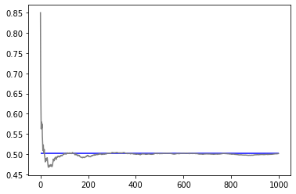
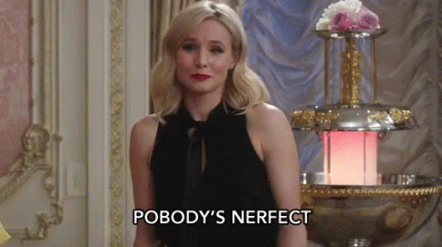

Lab 2: Statistics and Betting
This lab will dig a little more deeply into your previous Python experience as we examine two case studies in statistical simulations: the Monty Hall Problem and why the House always wins in gambling.
A simple scenario: flipping a coin
What do you expect to happen if you flip a coin?
The answer depends on the possible outcomes and their likelihoods. This is the simplest way to express probability. A balanced coin has two unique sides (heads and tails) and each side has an equal likelihood of coming out on top if there is no bias in your toss (okay, so we are making a lot of simplifying assumptions). That means your total likelihood of 1 (or 100%) must be split evenly:
P(heads) = 0.5
P(tails) = 0.5
Each individual coin toss contains an element of randomness. It doesn’t matter that you just got heads, you still have an even fifty-fifty chance to get gets again. But if you flip the coin many times, even if you get heads ten times in a row, you should still eventually get enough tails to even out the statistics so that roughly half your tosses come up heads and half come up tails.
Python random
Python has a module that allows you to generate pseudo-random numbers. The world of random number generators is wide, but we’ll keep it simple for this class.
Importing modules
Sometimes we will need to use tools that aren’t in base Python. To do this, we will import other packages (or “modules”) that contain what we need. To import a module, you have to tell Jupyter to import the module, and then you can (optionally) tell the notebook how you’d like to call on this module so you don’t have to write out its whole name every time. For example, we will use the Numerical Python package called “numpy” often in this class. It’s standard to refer to numpy as “np” so we would import it like this:
import numpy as npThe “import numpy” instruction tells it to import the module known officially as numpy and the added “as np” instruction tells it that when you refer to np later, you mean numpy.
Exercise 1:
Import the python random module with nickname “rd”
Now that you’ve imported the module, you can use it. But remember you have to call it using the nickname you gave it. So if I wanted to generate a random number between 0 and 1, I would use the random() function.
rd.random()
> 0.42361251090879926You can learn more about the module you just imported here, including lots of other functions it contains that may be helpful in the upcoming activities.
Exercise 2:
Investigate the documentation for the Python random module and do the following:
Make sure you repeat this enough times to be sure that it’s doing what you want it to (hint: write a for loop to repeat this process)
Putting it all together
Exercise 3:
Write a simple function in Python that simulates flipping a coin. It should not take any arguments and it should return the outcome “heads” or “tails”.
What is the probability of getting heads or tails? We have prior knowledge that tells us the answer here – it’s 50% for heads and 50% for tails. But how would we determine this experimentally? We can flip a coin many times and calculate what percentage of the time it came up with each option.
Exercise 4:
Write a simple function in Python that performs a coin flip some number of times and calculates the outcome. It should take as an argument the number of times you want to flip the coin, it should use your already-written coin-flip function, and it should return a dictionary with “heads” and “tails” as they keys and the fraction (decimal, not percent) of the times that that result occured.
Test your function with 20 coin flips. Repeat this a few times, checking the results each time. What do you notice?
Monte Carlo methods
Monte Carlo simulations take advantage of the law of large numbers and probabilities to simulate likely outcomes. It works by repeating small-scale experiments many times and averaging the results of those experiments.
So if you flipped a coin twenty times, you might get H/T = 0.4/0.6
If you did it again, you might get H/T = 0.75/0.25
If you did it a third time, maybe you’d get H/T = 0.55/0.45
Each of these experiments doesn’t get you the full picture, but repeated many times, you can get a statistical estimate for the likely results of the experiment.
Exercise 5:
Repeat your experiment of flipping a coin 20 times and save the results. Do this until you have 1000 sets of results saved as a nested dictionary.
Basic visualization with matplotlib
We’re going to add a new package to our repertoire… matplotlib .
There’s a lot to learn with matplotlib, but we will start with simple plotting: we just want the pyplot sub-package for matplotlib. Generally, this is imported with the nickname “plt”
Exercise 6:
Import matplotlib.pyplot with the nickname “plt”
We can use matplotlib to visualize the results of our 100 experiments.
Exercise 7:
Take your results dictionary and – however is easiest for you – turn it into two lists: one that stores the results that are heads and one that stores the results that are tails.
Then use the plt.hist(x) function to make two histograms – one for heads and one for tails.
Finally, adjust the number of bins in your histogram by adding “bins =” after the data inside your histogram. For example:
plt.hist(heads_results, bins = 10)Hint: if you want to keep python from printing out information about your data and the plot, use plt.show() after your plot commands – it cleans up the output.
Performing simple statistics with numpy
Visualizing the results can be useful, but we also want to know what this means numerically. What should you tell someone to expect if they plan to flip a coin twenty times? What is the likely range of outcomes they could experience? We can see from the plots that the most likely outcome is somewhere around 50/50, but that ratios of up to 30/70 are still fairly common. Almost never will the outcome of 20 coin flips be all heads or all tails. So let’s quantify this.
We’re going to use the package I mentioned earlier – Numpy – to do this.
Exercise 8:
Import numpy with the nickname “np”
The base “unit” of numpy is the numpy array. This is similar to a list in Python, but it’s much faster to use for calculations. Numpy uses vectorization to speed up all its internal functions.
You can convert a list to an array by using
np.array(list_name) Once you have a numpy array, you can do a lot with it. We’re going to use np.mean() , np.std() , np.sqrt() , np.arange() , and np.cumsum() today.
Exercise 9:
Convert your two lists (heads results and tails results) to numpy arrays and calculate the mean and standard deviation of those results.
Let’s add this information to the plot we already made. We made a histogram of the results of the heads experiments (stored in a numpy array called “heads_results”) like this:
plt.hist(heads_results, bins = 10)
plt.show()If I want to add the mean as a vertical line, I can add a line of code after the hist() function but before plt.show():
plt.hist(heads_results, bins = 10)
plt.axvline(x = heads_avg, color = 'b', label = 'mean result for heads')
plt.show()This creates a vertical line at some position x = heads_avg, which is the variable I used to store the mean value of the array we histogrammed. I’ve set the color to blue and given it a label.
If I want to add information about the standard error, I can use the axvspan() function:
plt.hist(heads_results, color = 'gray',bins = 9)
plt.axvline(x = heads_avg, color = 'b', label = 'mean result for heads')
xmin = heads_avg - heads_sdev
xmax = heads_avg + heads_sdev
plt.axvspan(xmin,xmax, color='b', alpha=0.25)
plt.show()This fills the area on the plot between the x-values xmin and xmax, which I’ve calculated by finding the low end of our range (average minus error) and the high end of our range (average plus error). I picked the same color (blue) and set alpha (the opacity of the fill) to 0.25.
plt.hist(heads_results, color = 'gray',bins = 9)
plt.axvline(x = heads_avg, color = 'b', label = 'mean result for heads')
xmin = heads_avg - heads_sdev
xmax = heads_avg + heads_sdev
plt.axvspan(xmin,xmax, color='b', alpha=0.25)
plt.show()
Exercise 10:
Make a plot like we did above, but for the results for tails, not heads. Use red as the color, and make the fill more transparent.
The standard deviation tells us how much we might expect any given experiment to deviate from the average. But if we wanted to give an answer to how often a coin landed on heads, with error, we would use the standard error, not the standard deviation.
\(\sigma = \frac{1}{\sqrt{N}}\text{SD}\)
Where \(\sigma\) is the standard error, \(N\) is the number of times we repeated our experiment, and SD is the standard deviation.
Exercise 11:
Find the fraction of times a flipped coin will land on heads, with the standard error. Repeat for tails.
Hint: you can use len() to determine the number of elements in a numpy array, just like you can with a Python list.
Let’s take a look now at how the Monte Carlo method (the repeated experiments) gets us from something with a relatively wide distribution to something with very high accuracy (hint: the more you do, the better it gets)
plt.plot(np.cumsum(heads_results)/np.arange(1,len(heads_results)+1,1), color = "gray")
plt.hlines(heads_avg,xmin = 0,xmax =len(heads_results),color = "b")
plt.show()
All I’ve done here is plot the cumulative average of the results of our experiments for “heads.” I did this using the built-in cumulative sum function and dividing that array by an array that shows the number of experiments completed up to that point (1, then 2, then 3, all the way up to the final number of 1000).
We can see a lot of initial variation in our results, but eventually the average levels out to something very consistent.
This is the power of the Monte Carlo simulation – the larger the number of experiments, the better the results.
Exercise 12:
Repeat the process above to make a plot that shows the cumulative average for the results for tails, along with the final average value. Use red to indicate the average value for tails.
Stop here for a minute. Check-in with slido and then wait. Work on something else, help your neighbor, etc. We will be returning to this lab shortly.
The Monty Hall Problem
Let’s look at a famous riddle that involves statistics and answer it using Monte Carlo methods.
Suppose you are on a game show, and you have the choice of picking one of three doors: Behind one door is a car; behind the other doors, goats. You pick a door, let’s say door 1, and the host, who knows what’s behind the doors, opens another door, say door 3, which has a goat. The host then asks you: do you want to stick with your choice or choose another door?
Let’s start by setting up our problem. We have three doors, two of which have goats behind them and one of which has a car behind it. We can represent that as a list.
We then initialize some lists to track what happens if we stay and what happens if we change our minds.
doors = ["car","goat","goat"]
results_stay = []
results_change = []We then write a simple function that takes our doors, makes a random selection, and then returns the results in the following way: if our first choice happens to be the door with the car behind it, we win if we stay! So our “stay” results are “car” and our “change” results are goat. If the first choice happens to have a goat behind it, then staying gives us a goat, while changing gives us a car.
Note that it’s important to keep our results straight. We could write a function that looks like this:
def MontyHall(doors):
rd.shuffle(doors)
first_door = rd.choice(doors)
if first_door == "car":
return "car", "goat"
else:
return "goat", "car"but then we would have to make sure that we assigned the output in the right order, i.e.
results_stay.append(MontyHall(doors)[0])
results_change.append(MontyHall(doors)[1])It’s easier to keep track of your results by modifying the lists within the function.
def MontyHall(doors, results_stay, results_change):
rd.shuffle(doors)
first_door = rd.choice(doors)
if first_door == "car":
results_stay.append("car")
results_change.append("goat")
else:
results_stay.append("goat")
results_change.append("car")Exercise 13:
Test this function. Does it do what you expect? Do you understand the output?
Stop here for a minute. Check-in with slido and then wait. Work on something else, help your neighbor, etc. We will be returning to this lab shortly.
Exercise 14:
Create a function that performs a Monte Carlo simulation for this scenario. It should use the Monty Hall function we wrote above, and you can assume one “choice” is one experiment.
Your function should take as an argument the number of Monte Carlo iterations you want to do. It should return a dictionary with two keys: “stay” and “change” whose values are a numpy array that tracks how many times you have won by staying with your original door for “stay” or by changing to the other door for “change”.
Hint: you may want to modify the MontyHall function we wrote above to make the results numerical, for example, 1 for a car and 0 for a goat.
Run this function for 10, 100, and 1000 iterations and plot the results for each, similarly to how we plotted the heads/tails results. Show us the cumulative average of wins for “stay” and “change” each, but put them both on the same plot (you don’t need to plot the overall average for each, just the cumulative average)
Stop here for a minute. Check-in with slido and then wait. Work on something else, help your neighbor, etc. We will be returning to this lab shortly.
Why the House Always Wins
Lest you start to think your insider knowledge of statistics is going to give you the upper hand at the casino, let’s talk about how to use Monte Carlo methods to demonstrate that the house always (on average) wins.
The scenario
Consider an imaginary game in which our player, rolls an imaginary dice to get an outcome of 1 to 100. If the player rolls anything from 1–51, the house wins, but if the number rolled is from 52–100, the player wins.
The house edge displays the advantage the casino has in winning the bet. It’s the casino’s average profit from a player’s bet.
Let’s suppose our player bets 1 dollar on this game.
\(P(player\ wins) = 49/100,\ P(casino\ wins)= 51/100\)
\(E(player\ profit)= 1*(49/100)-1*(51/100) = -0.02 = -2\%\)
Therefore, the house edge in our imaginary game is 2%.
(This isn’t just because of our fictional scenario – you can see some house edges here to see how our game compares. We are actually being quite generous to our fictional player)
The simulation
We need a dice simulator which throws a value from 1–100 with uniform probability distribution.
Exercise 15:
Create a function to simulate the dice throw above and return the boolean operator True if the player wins and False if the casino wins.
Now that we’ve simulated the roll, we need to simulate the betting process. This is a little more complicated, but we can use the equation for expected profit above to help us out. We should consider three things:
Starting funds : The money the player is starting with
Wager Amount : The amount the player bets in each game
Total plays : The number of times the player plays the game (This value is changed for creating different scenarios)
Exercise 16:
Create a function that simulates (multiple) bets. It should take as input the starting funds, the wager amount (for the sake of simplicity, let’s say the player bets the same amount on each play), and the number of plays.
This function should track the amount of money the player has after each play, from start to end. Let’s assume that number can become negative (i.e. they can rack up a debt to the casino). It should return an array with those amounts.
Don’t forget to test that function – make sure it’s doing what you want.
Now, remember we are looking for average behavior. Hopefully you noticed in testing your function that sometimes the player emerges with more money than they started with! That’s the allure of gambling! But hopefully you also noticed that most often, the player ends at a loss.
If we want to know how this looks to the house, what we need to do is simulate many many scenarios and see what the average result is (and how large the error is on that result). That’s just a Monte Carlo simulation (aptly named).
Exercise 17:
Write a function that does a Monte Carlo simulation of playing the game with a fixed starting amount, wager amount, and number of plays.
Remember to run the simulation many times (let’s go with 1,000).
Plot the outcomes – it can help to show the individual scenarios alongside the average (in a different color, and/or with an alpha less than 1 so we can see how all the varied outcomes contribute to the overall average. You can include this plot as part of your MC function or you can write it separately.
Testing different scenarios
Exercise 18:
Try your function out on the following scenarios:
Scenario 1:
Scenario 2:
Scenario 3:
Scenario 4:
Plot the individual outcomes and average result from each simulation. What do you notice?

Post-Lab: Production and Reflection
When you are done with this lab, make sure you save and export it as an HTML. This HTML file is what you will turn in through Moodle. In addition, don’t forget to fill out the post-lab reflection form. You must turn in both an HTML that demonstrates you have completed the lab and a self-reflection to get credit.